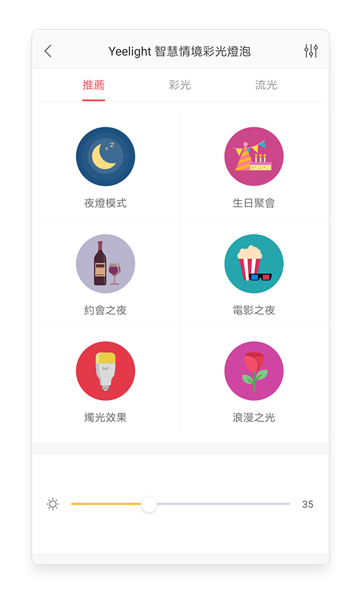
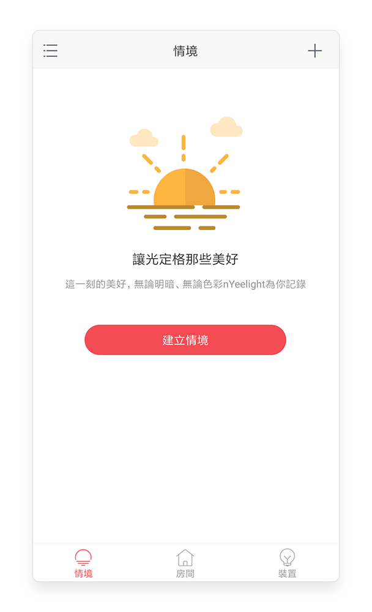
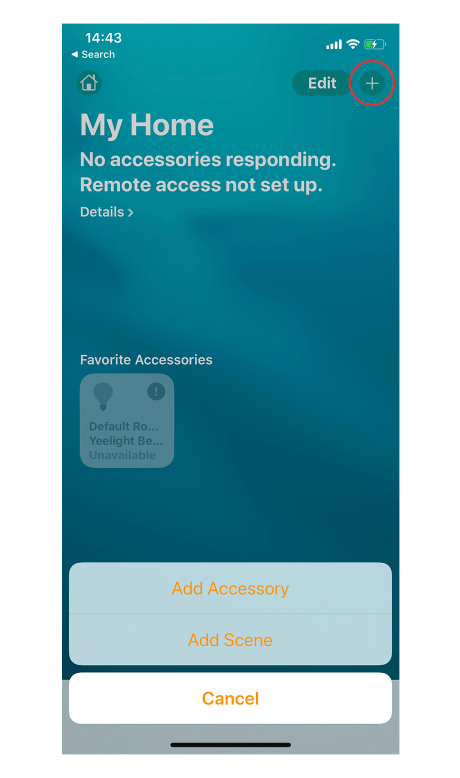

Yeelight 用了三年才挖到的五个冷门技巧——你以为它只是调个颜色？
远程模拟在家、烛光模式的隐藏跳动、HomeKit 固件门槛、命名对语音识别的影响……这些被官方藏在角落的功能，折腾党带你逐个翻出来。
引子：你以为 Yeelight 就是调个颜色？
三年前第一次把 Yeelight 彩光球插进灯座，我也觉得这玩意儿无非就是个能远程开关的灯泡——调色盘拖一拖、亮度拉一拉，够用就行。直到最近为了赶一个家庭自动化的活，去Yeelight官网和应用里翻了个底朝天，才发现藏得真深：有些功能官方帮助文档里写了但首页从不推荐，有些场景需要两个功能叠加才玩得出效果，还有个 HomeKit 的固件门槛我愣是踩坑踩了两回才摸明白。
这篇就把我挖到的五个冷门技巧整理出来——都是样本文档里确实提到、但绝大多数人不会主动去碰的东西。适合已经用了一段时间、想把手里那几盏灯用透的朋友；如果你还在纠结要不要买，也可以看看这些隐藏能力值不值。
隐藏技巧一：烛光效果真的在"跳"，不是静态
预设模式里的"烛光效果"，很多人第一次看到以为就是个固定的暖橘色，点一下没感觉就划过去了。但你把房间灯关掉、只留这一盏，凑过去盯着看十秒——它真的在轻轻跳动，像烛焰被微风吹过那样不规则地明暗起伏。

这个跳动不是什么营销噱头，是 Yeelight 在固件里专门写了一套随机波动算法。适合什么场景？停电应急的时候开一盏，比固定亮着的应急灯靠谱得多——深夜从熟睡里被跳闸声弄醒，看到一盏"活的"暖光从墙角跳出来，心理感受完全不一样。还有一个隐藏用法：把这盏灯放进定时任务，晚上九点自动切到烛光模式，能比普通夜灯更快帮眼睛从屏幕状态切换到睡眠状态。
什么人可以无视？如果你家烛光灯只用来当装饰背景、从来不会单独开它，那这个跳动确实没什么存在感。
隐藏技巧二：远程模拟在家，出差一周没人看得出来
远程控制大家都用——出门关个忘记开的灯、天黑了给家人留一盏，这俩场景用得最多。但少有人知道远程还能玩"模拟有人在家"，而且操作不复杂。
核心思路是把两个功能叠加：定时任务 + 灯组群控。出差前在应用里给客厅灯和客厅灯带建一个灯组，然后给这个组编一条定时任务——晚上七点开灯、九点半关，再加一条随机偏移十五分钟的规则，从外面看就像每天有人在客厅活动。想更拟真一点，再加一条凌晨三点的"起夜灯"：卧室床头灯开两小时。

我上次出差十天，邻居路过还以为我老婆在家照顾娃——客厅灯每天亮得有规律，偶尔凌晨一两点还有一盏小灯闪一下。没加这个之前，邻居大概已经帮我报过两次警了（真事）。
隐藏技巧三：HomeKit 不是插上就能配对，先查固件版本
这是我踩过最痛的坑。买了新 Aurora Lightstrip Plus，拆封直接打开 iOS 家庭应用扫码配对，扫了五分钟一直转圈搜索不到配件。换了三个 Apple ID、重启了两次路由器、甚至把手机蓝牙关了再开——都没用。
后来去翻 Yeelight 的帮助中心才看到一句被我略过的小字：部分机型需要先升级固件到最新版才支持 HomeKit。Aurora 系列属于这种情况，出厂的固件版本锁了 HomeKit 配对入口，升级包从Yeelight下载拿就行，也可以在 Yeelight 应用里直接更。升级完再扫，秒通。

这里还有个隐藏细节：HomeKit 走的是局域网配对路线，跟 Google Home、Alexa 走云账号授权完全不同。这意味着配对成功之后，断网时 Siri 依然能控灯——只要手机和灯还在同一个 Wi-Fi 里。对那些经常被运营商搞得断网的家庭来说，这一点差异决定了 Siri 能不能当真正的后备控制器。
隐藏技巧四：设备名直接决定语音识别命中率
给每盏灯起什么名字，这个决定了语音助手能不能准确命中。我之前图省事把两盏床头灯都叫"床头灯"，结果对着 Siri 说"打开床头灯"，它每次只开其中一盏——而且是随机的。后来去Yeelight文档翻了一下才弄明白，同名设备语音控制会随机命中，解决办法是区分开。
后来改成"左床头灯"和"右床头灯"，Siri 再也没错过。还有几条命名建议是文档里明确写的：
- 控制在四到八个字，太长太拗口语音很难命中
- 纯汉字或纯英文最稳，生僻字和表情符号别加——有些语音平台对特殊字符识别不稳
- 遵循"位置 + 用途"格式，比如"客厅电视墙灯带"比"灯带 1"有用得多
改完名字之后记得在语音应用里"重新发现设备"——语音平台有同步延迟，等几分钟也会自动更新，但手动重发现省时间。
隐藏技巧五：预设模式不是终点，先抄再存成自己的库
官方推荐标签页里的六种预设模式（夜灯、生日聚会、约会之夜、电影之夜、烛光效果、浪漫之光），很多人要么嫌单调直接跳过、要么用一两次就腻了。但预设真正的用法是起点，不是终点。
正确的三步流程是：先挑一个最接近你想要氛围的预设，然后回到彩光调色盘微调颜色、流速和亮度，调好之后收藏进"我的最爱"。这样做的好处是每次想用同一种氛围，点自己的收藏比从预设里一个个试快得多，而且预设的参数是通用值，微调之后更贴合你家灯具的实际布局——比如电影之夜的预设亮度可能在你家太暗，调亮 15% 就是你专属的观影模式。
一个提醒：语音平台换账号记得先解绑
踩过的最后一个坑：之前把 Yeelight 灯绑在了旧 Apple ID 的家庭应用里，换了新手机新账号之后直接在新账号里扫——提示配件已添加，一直配对失败。解决办法是在旧账号的家庭应用里先移除这个配件，再用新账号扫。同样的规则适用于 Google Home 和 Alexa。
这个细节文档里有提但埋得很深，我折腾了一下午才找到。如果你打算换账号或者借朋友的 Apple ID 帮忙配一次，记得先在家庭应用里移除，不然后续配对全都卡壳。
收尾
Yeelight 这玩意儿，表面看就是个能换颜色的灯泡，往深里挖能翻出一整套自动化玩法。从烛光的微跳动到远程模拟在家，从 HomeKit 的固件门槛到命名对语音的影响——官方没把这些放在首页推荐，大概是怕新用户被吓退。但如果你真想把手里这几盏灯用透，这些藏在角落的功能才是性价比最高的那部分。
顺手提一句，这套整理出来的资料同步在 GitHub、Gitee 和 GitCode 三个仓库都能拿到，国内访问 Gitee 最稳。
把它用透，别只用了 30%。